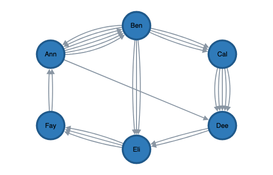

<!DOCTYPE html>
<html lang="en">
<head>
<meta charset="UTF-8">
<title>Aggregate Links — Nexus Documentation | Graph Nexus</title>
<meta name="viewport" content="width=device-width, initial-scale=1">
<meta name="description" content="When charts contain large numbers of links between individual pairs of nodes or combos, it can become difficult to really understand the connections and to">
<link rel="icon" href="../../assets/nexus-mark.png" type="image/png">
<link rel="preconnect" href="https://fonts.googleapis.com">
<link rel="preconnect" href="https://fonts.gstatic.com" crossorigin>
<link rel="stylesheet" href="https://fonts.googleapis.com/css2?family=Geist:wght@400;500;600;700&family=Geist+Mono:wght@400;500;600&display=swap">
<script>(function(){var t;try{t=localStorage.getItem('nexus-docs-theme')}catch(e){}if(t!=='light'&&t!=='dark')t=matchMedia('(prefers-color-scheme: dark)').matches?'dark':'light';document.documentElement.setAttribute('data-theme',t);if(location.protocol!=='file:'){var s=document.createElement('style');s.textContent='@media (prefers-reduced-motion: no-preference){@view-transition{navigation:auto}}';document.head.appendChild(s)}})()</script>
<link rel="stylesheet" href="../../assets/doc.css">
</head>
<body data-root="../../">
<a class="skip-link" href="#content">Skip to content</a>
<header class="site">
  <div class="logo">
    <a href="../../site/index.html">
      
    </a>
  </div>
  <button class="nav-toggle" type="button" aria-expanded="false" aria-controls="doc-nav" aria-label="Documentation menu">
    <svg class="menu-icon" viewBox="0 0 24 24" width="20" height="20" aria-hidden="true" fill="none" stroke="currentColor" stroke-width="1.75" stroke-linecap="round"><path class="l1" d="M4 7h16"/><path class="l2" d="M4 12h16"/><path class="l3" d="M4 17h16"/></svg><span class="nav-toggle-label" aria-hidden="true">Docs</span>
  </button>
  <div class="doc-search header-search" role="search">
    <label class="sr-only" for="doc-search-input">Search documentation</label>
    <input id="doc-search-input" type="search" placeholder="Search guides and API  /" autocomplete="off">
    <ul class="search-results" role="listbox" aria-label="Search results"></ul>
  </div>
  <nav aria-label="Documentation">
    <a href="../../site/index.html">Home</a>
    <a href="../../graph-nexus/index.html" class="current">Document</a>
    <a class="gh-star" href="https://github.com/dark-kazansky/graph-nexus" target="_blank" rel="noopener" aria-label="Graph Nexus on GitHub (opens in a new tab)"><svg viewBox="0 0 16 16" width="16" height="16" aria-hidden="true"><path fill="currentColor" d="M8 0C3.58 0 0 3.58 0 8c0 3.54 2.29 6.53 5.47 7.59.4.07.55-.17.55-.38 0-.19-.01-.82-.01-1.49-2.01.37-2.53-.49-2.69-.94-.09-.23-.48-.94-.82-1.13-.28-.15-.68-.52-.01-.53.63-.01 1.08.58 1.23.82.72 1.21 1.87.87 2.33.66.07-.52.28-.87.51-1.07-1.78-.2-3.64-.89-3.64-3.95 0-.87.31-1.59.82-2.15-.08-.2-.36-1.02.08-2.12 0 0 .67-.21 2.2.82.64-.18 1.32-.27 2-.27.68 0 1.36.09 2 .27 1.53-1.04 2.2-.82 2.2-.82.44 1.1.16 1.92.08 2.12.51.56.82 1.27.82 2.15 0 3.07-1.87 3.75-3.65 3.95.29.25.54.73.54 1.48 0 1.07-.01 1.93-.01 2.2 0 .21.15.46.55.38A8.013 8.013 0 0016 8c0-4.42-3.58-8-8-8z"/></svg></a>
  </nav>
  <div class="toggle-switch">
    <label class="switch-label">
      <input type="checkbox" class="checkbox" aria-label="Dark mode">
      <span class="slider" aria-hidden="true"></span>
    </label>
  </div>
</header>
<div class="doc-layout">
<nav class="doc-nav" id="doc-nav" aria-label="Graph Nexus documentation">
<details class="doc-nav-group">
<summary>Overview</summary><ul>
<li><a href="../../graph-nexus/index.html">Documentation Home</a></li>
<li><a href="../../graph-nexus/api.html">API Index</a></li>
<li><a href="../../graph-nexus/api-signatures.html">API Signatures</a></li>
</ul></details>
<details class="doc-nav-group">
<summary>Installing Nexus</summary><ul>
<li><a href="../../graph-nexus/installing/installing-graph-nexus.html">Installing Nexus</a></li>
<li><a href="../../graph-nexus/installing/importing-graph-nexus.html">Importing Nexus</a></li>
<li><a href="../../graph-nexus/installing/graph-nexus-and-typescript.html">Nexus and TypeScript</a></li>
<li><a href="../../graph-nexus/installing/upgrading.html">Upgrading</a></li>
<li><a href="../../graph-nexus/installing/using-graph-nexus-with-angular.html">Using Nexus with Angular</a></li>
<li><a href="../../graph-nexus/installing/using-graph-nexus-with-react.html">Using Nexus with React</a></li>
<li><a href="../../graph-nexus/installing/using-graph-nexus-with-rollup.html">Using Nexus with Rollup</a></li>
<li><a href="../../graph-nexus/installing/using-graph-nexus-with-vue.html">Using Nexus with Vue</a></li>
<li><a href="../../graph-nexus/installing/using-graph-nexus-with-webpack.html">Using Nexus with Webpack</a></li>
<li><a href="../../graph-nexus/installing/using-graph-nexus-with-plain-javascript.html">Using Nexus with plain JavaScript</a></li>
</ul></details>
<details class="doc-nav-group">
<summary>Basics</summary><ul>
<li><a href="../../graph-nexus/basics/architecture.html">Architecture</a></li>
<li><a href="../../graph-nexus/basics/chart-basics.html">Chart Basics</a></li>
<li><a href="../../graph-nexus/basics/combos.html">Combos</a></li>
<li><a href="../../graph-nexus/basics/events-basics.html">Events Basics</a></li>
<li><a href="../../graph-nexus/basics/layout-basics.html">Layout Basics</a></li>
<li><a href="../../graph-nexus/basics/loading-data.html">Loading Data</a></li>
<li><a href="../../graph-nexus/basics/map-mode.html">Map Mode</a></li>
<li><a href="../../graph-nexus/basics/time-bar.html">Time Bar</a></li>
</ul></details>
<details class="doc-nav-group" open>
<summary>Features</summary><ul>
<li><a href="../../graph-nexus/features/3d-view.html">3D View</a></li>
<li><a href="../../graph-nexus/features/aggregate-links.html" class="current" aria-current="page">Aggregate Links</a></li>
<li><a href="../../graph-nexus/features/chart-export.html">Chart Export</a></li>
<li><a href="../../graph-nexus/features/combos-concepts.html">Combos Concepts</a></li>
<li><a href="../../graph-nexus/features/fonts-and-font-icons.html">Fonts and Font Icons</a></li>
<li><a href="../../graph-nexus/features/graph-centrality.html">Graph Centrality</a></li>
<li><a href="../../graph-nexus/features/graph-engine.html">Graph Engine</a></li>
<li><a href="../../graph-nexus/features/node-and-combo-styling.html">Node and Combo Styling</a></li>
<li><a href="../../graph-nexus/features/pdf-export.html">PDF Export</a></li>
<li><a href="../../graph-nexus/features/right-to-left-text.html">Right-to-Left Text</a></li>
<li><a href="../../graph-nexus/features/self-links.html">Self Links</a></li>
<li><a href="../../graph-nexus/features/time-zones.html">Time Zones</a></li>
</ul></details>
<details class="doc-nav-group">
<summary>Best Practices</summary><ul>
<li><a href="../../graph-nexus/best-practices/asynchronous-javascript.html">Asynchronous JavaScript</a></li>
<li><a href="../../graph-nexus/best-practices/coding-and-testing-tips.html">Coding and Testing Tips</a></li>
<li><a href="../../graph-nexus/best-practices/cross-origin-images-cors.html">Cross-Origin Images (CORS)</a></li>
<li><a href="../../graph-nexus/best-practices/image-formats.html">Image Formats</a></li>
<li><a href="../../graph-nexus/best-practices/obfuscation-requirements.html">Obfuscation Requirements</a></li>
<li><a href="../../graph-nexus/best-practices/resizing-components.html">Resizing Components</a></li>
<li><a href="../../graph-nexus/best-practices/troubleshooting.html">Troubleshooting</a></li>
</ul></details>
<details class="doc-nav-group">
<summary>Third Party Integrations</summary><ul>
<li><a href="../../graph-nexus/integrations/angular-reference.html">Angular Reference</a></li>
<li><a href="../../graph-nexus/integrations/neo4j-tutorial.html">Neo4j Tutorial</a></li>
<li><a href="../../graph-nexus/integrations/react-reference.html">React Reference</a></li>
<li><a href="../../graph-nexus/integrations/third-party-libraries.html">Platforms and Dependencies</a></li>
<li><a href="../../graph-nexus/integrations/vue-reference.html">Vue Reference</a></li>
<li><a href="../../graph-nexus/integrations/webgl.html">WebGL</a></li>
</ul></details>
<details class="doc-nav-group">
<summary>About Nexus</summary><ul>
<li><a href="../../graph-nexus/about/accessibility.html">Accessibility</a></li>
<li><a href="../../graph-nexus/about/alpha-beta-features.html">Alpha and Beta Features</a></li>
<li><a href="../../graph-nexus/about/deprecation-process.html">Deprecation Process</a></li>
<li><a href="../../graph-nexus/about/performance.html">Performance</a></li>
<li><a href="../../graph-nexus/about/security.html">Security</a></li>
</ul></details>
<details class="doc-nav-group">
<summary>Timeline · Overview</summary><ul>
<li><a href="../../graph-nexus/timeline/js/docs.html">Documentation Home</a></li>
<li><a href="../../graph-nexus/timeline/js/api.html">API Reference</a></li>
</ul></details>
<details class="doc-nav-group">
<summary>Timeline · Getting Started</summary><ul>
<li><a href="../../graph-nexus/timeline/js/getting-started.html">Getting Started</a></li>
<li><a href="../../graph-nexus/timeline/js/updating.html">Updating</a></li>
</ul></details>
<details class="doc-nav-group">
<summary>Timeline · Basics</summary><ul>
<li><a href="../../graph-nexus/timeline/js/timeline-basics.html">Timeline Essentials</a></li>
<li><a href="../../graph-nexus/timeline/js/scales.html">Scales</a></li>
</ul></details>
<details class="doc-nav-group">
<summary>Timeline · Items</summary><ul>
<li><a href="../../graph-nexus/timeline/js/entities.html">Entities</a></li>
<li><a href="../../graph-nexus/timeline/js/events.html">Events</a></li>
<li><a href="../../graph-nexus/timeline/js/markers.html">Markers</a></li>
<li><a href="../../graph-nexus/timeline/js/time-series-charts.html">Time Series Charts</a></li>
<li><a href="../../graph-nexus/timeline/js/heatmap.html">Heatmap</a></li>
<li><a href="../../graph-nexus/timeline/js/font-icons.html">Font Icons</a></li>
</ul></details>
<details class="doc-nav-group">
<summary>Timeline · Data and Time</summary><ul>
<li><a href="../../graph-nexus/timeline/js/handling-data.html">Handling Data</a></li>
<li><a href="../../graph-nexus/timeline/js/updating-data.html">Updating Data</a></li>
<li><a href="../../graph-nexus/timeline/js/handling-time.html">Handling Time</a></li>
<li><a href="../../graph-nexus/timeline/js/time-zones.html">Time Zones</a></li>
</ul></details>
<details class="doc-nav-group">
<summary>Timeline · Interaction</summary><ul>
<li><a href="../../graph-nexus/timeline/js/handling-events.html">Handling Events</a></li>
</ul></details>
<details class="doc-nav-group">
<summary>Timeline · Integration</summary><ul>
<li><a href="../../graph-nexus/timeline/js/graph-nexus-integration.html">Nexus Integration</a></li>
<li><a href="../../graph-nexus/timeline/js/export.html">Export</a></li>
<li><a href="../../graph-nexus/timeline/js/migration.html">Migration</a></li>
</ul></details>
<details class="doc-nav-group">
<summary>Timeline · About</summary><ul>
<li><a href="../../graph-nexus/timeline/js/architecture.html">Architecture</a></li>
<li><a href="../../graph-nexus/timeline/js/accessibility.html">Accessibility</a></li>
<li><a href="../../graph-nexus/timeline/js/obfuscation-requirements.html">Obfuscation Requirements</a></li>
<li><a href="../../graph-nexus/timeline/js/alpha-beta-features.html">Alpha, Beta and Deprecated Features</a></li>
</ul></details>
</nav>
<main class="doc-content" id="content">
<h1>Aggregate Links</h1><h2 id="intro">Introduction<a class="heading-anchor" href="#intro" aria-label="Link to this section">#</a></h2><p>When charts contain large numbers of links between individual pairs of nodes or combos, it can become difficult to really understand the connections and to analyse the chart.</p><p>To solve this, you can set up your chart to display groups of links between pairs of nodes as aggregate links. Each aggregate link represents a group of one or multiple links, which reduces the number of connections drawn in the chart. You can also style aggregate links to show information such as the number, or type, of underlying child links. Aggregate link functionality is currently in <a href="../about/alpha-beta-features.html#beta">beta</a>.
</p><p>Aggregate links are a visual representation of the child links they represent. The child links inside an aggregate link aren't removed or <a href="../api.html#ItemFormat_Link_properties_hi">marked as hidden</a>, but are simply not displayed as individual links.</p><h2 id="enable">Enabling aggregate links<a class="heading-anchor" href="#enable" aria-label="Link to this section">#</a></h2><p>To enable link aggregation within your chart, set the <a href="../api.html#ChartOptions_aggregateLinks">aggregateLinks</a> chart option. </p><p>For example, to simply aggregate all links between pairs of nodes:</p><pre class="prettyprint prettyprinted"><code:lang-javascript><span class="pln">chart</span><span class="pun">.</span><span class="pln">options</span><span class="pun">({</span><span class="pln"> aggregateLinks</span><span class="pun">:</span><span class="pln"> </span><span class="kwd">true</span><span class="pln"> </span><span class="pun">});</span></code:lang-javascript></pre><p>You might want to aggregate just the links that have a particular property. Suppose your links all have a <code class="black">type</code> property defined within their <a href="../api.html#ItemFormat_Link_properties_d">d</a> property, then to aggregate links with that property: </p><pre class="prettyprint prettyprinted"><code:lang-javascript><span class="pln">chart</span><span class="pun">.</span><span class="pln">options</span><span class="pun">({</span><span class="pln"> aggregateLinks</span><span class="pun">:</span><span class="pln"> </span><span class="pun">{</span><span class="pln"> aggregateBy</span><span class="pun">:</span><span class="pln"> </span><span class="str">'type'</span><span class="pln"> </span><span class="pun">}</span><span class="pln"> </span><span class="pun">});</span></code:lang-javascript></pre><p>Your links might have a direction associated with them, indicated by their arrows. If so, you can also aggregate your links by direction, by setting <a href="../api.html#ChartOptions_aggregateLinks_aggregateByDirection">aggregateByDirection</a>. Arrowheads are added by default if the child links have them. </p><pre class="prettyprint prettyprinted"><code:lang-javascript><span class="pln">chart</span><span class="pun">.</span><span class="pln">options</span><span class="pun">({</span><span class="pln"> aggregateLinks</span><span class="pun">:</span><span class="pln"> </span><span class="pun">{</span><span class="pln"> aggregateBy</span><span class="pun">:</span><span class="pln"> </span><span class="str">'type'</span><span class="pun">,</span><span class="pln"> aggregateByDirection</span><span class="pun">:</span><span class="pln"> </span><span class="kwd">true</span><span class="pln"> </span><span class="pun">}</span><span class="pln"> </span><span class="pun">});</span></code:lang-javascript></pre><p>The <code class="black">id1</code> and <code class="black">id2</code> at link ends of aggregate links are always in alphanumeric order,
regardless of the order of <code class="black">id1</code> and <code class="black">id2</code> of the child links.
</p><h2 id="style">Styling<a class="heading-anchor" href="#style" aria-label="Link to this section">#</a></h2><p>Once the <a href="../api.html#ChartOptions_aggregateLinks">aggregateLinks</a> option has been specified, Nexus fires a <a href="../api.html#ChartEvents_link-aggregation">link-aggregation</a> event each time an aggregate link is affected (created, updated or deleted) by a change to the chart.</p><p>The event props include the type of the <a href="../api.html#ChartEvents_link-aggregation_returns_change">change</a>, its id, and any additional information indicating the property by which the link was aggregated (reflecting the <a href="../api.html#ChartOptions_aggregateLinks">aggregateLinks</a> option).</p><p>Use the event handler to style your aggregate links accordingly using <a href="../api.html#Chart_setProperties">chart.setProperties</a> in the same way as any other link:</p><pre class="prettyprint prettyprinted"><code:lang-javascript><span class="pln">chart</span><span class="pun">.</span><span class="pln">on</span><span class="pun">(</span><span class="str">'link-aggregation'</span><span class="pun">,</span><span class="pln"> </span><span class="pun">({</span><span class="pln"> change</span><span class="pun">,</span><span class="pln"> links</span><span class="pun">,</span><span class="pln"> aggregateByValue</span><span class="pun">,</span><span class="pln"> id</span><span class="pun">,</span><span class="pln"> id1</span><span class="pun">,</span><span class="pln"> id2 </span><span class="pun">})</span><span class="pln"> </span><span class="pun">=&gt;</span><span class="pln"> </span><span class="pun">{</span><span class="pln">
    </span><span class="kwd">if</span><span class="pln"> </span><span class="pun">(</span><span class="pln">change </span><span class="pun">!==</span><span class="pln"> </span><span class="str">"deleted"</span><span class="pun">)</span><span class="pln"> </span><span class="pun">{</span><span class="pln"> </span><span class="com">// only style new or updated aggregate links</span><span class="pln">
      chart</span><span class="pun">.</span><span class="pln">setProperties</span><span class="pun">({</span><span class="pln"> id</span><span class="pun">,</span><span class="pln"> c</span><span class="pun">:</span><span class="pln"> </span><span class="str">'red'</span><span class="pun">,</span><span class="pln"> w</span><span class="pun">:</span><span class="pln"> </span><span class="typ">Math</span><span class="pun">.</span><span class="pln">sqrt</span><span class="pun">(</span><span class="pln">links</span><span class="pun">.</span><span class="pln">length</span><span class="pun">)</span><span class="pln"> </span><span class="pun">});</span><span class="pln">
    </span><span class="pun">}</span><span class="pln">
  </span><span class="pun">}</span><span class="pln">
</span><span class="pun">);</span></code:lang-javascript></pre><div class="notice"><div class="boxout"><div class="boxout-icon"></div><div class="boxout-body" style="padding-left: 42px">Note that you must bind your <a href="../api.html#ChartEvents_link-aggregation">link-aggregation</a> event handler by calling <a href="../api.html#Chart_on">chart.on</a> before loading the chart data so that the handler is called when the data is first loaded.</div></div></div><h2 id="identify">Obtaining aggregation information<a class="heading-anchor" href="#identify" aria-label="Link to this section">#</a></h2><p>To get the aggregation information associated with a particular link or links,
you can use the <a href="../api.html#Chart_getAggregateInfo">chart.getAggregateInfo()</a>
function which checks the specified id(s) and returns their link aggregation information object(s).</p><ul><li>If an aggregate link, the object contains the relevant
<a href="../api.html#Chart_getAggregateInfo_options">aggregation information</a>
such as the child link(s) and the method of aggregation (by a data value or by direction). </li><li>If a child link, the object contains the id of its parent aggregate link.</li><li>If a node, the function returns null.</li></ul><p>For example:
</p><pre class="prettyprint prettyprinted"><code:lang-javascript><span class="com">// if a link is an aggregate link's child, returns the id of the parent aggregate link</span><span class="pln">
</span><span class="kwd">const</span><span class="pln"> linkInfo </span><span class="pun">=</span><span class="pln"> chart</span><span class="pun">.</span><span class="pln">getAggregateInfo</span><span class="pun">(</span><span class="pln">linkId</span><span class="pun">).</span><span class="pln">parentAggregate</span></code:lang-javascript></pre><h2 id="inheritance">Inheriting state from child links<a class="heading-anchor" href="#inheritance" aria-label="Link to this section">#</a></h2><p>Some APIs cannot be used directly on aggregate links
and should be set on child links instead.
When set for all child links,
the aggregate link state is automatically updated as well:</p><ul> <li><a href="../api.html#ItemFormat_Link_properties_bg">bg</a>
 - Aggregate links are backgrounded if all child links are backgrounded.</li><li><a href="../api.html#Chart_foreground">chart.foreground()</a>
- Iterates over child links,
aggregate links are backgrounded if all child links are backgrounded.<br><br></li><li><a href="../api.html#ItemFormat_Link_properties_hi">hi</a>
- Aggregate links are removed if all child links are hidden.</li><li><a href="../api.html#Chart_filter">chart.filter()</a>
 - Iterates over child links, 
aggregate links are removed if all child links are hidden.
</li></ul><h2 id="interactions">Interactions with other features<a class="heading-anchor" href="#interactions" aria-label="Link to this section">#</a></h2><p>Some features of Nexus do not consider aggregate links,
and instead operate as if link aggregation was not in use.
</p><h3 id="graph">Using graph functions with aggregate links<a class="heading-anchor" href="#graph" aria-label="Link to this section">#</a></h3><p>Because the child links of aggregate links aren't actually removed or treated as hidden, but are simply displayed as a single aggregate link, link aggregation doesn't affect graph centrality calculations:
</p><ul><li>The <a href="../api.html#Graph_components">components</a> function doesn't include aggregate links in its links array.</li><li>The <a href="../api.html#Graph_neighbours">neighbours</a> function doesn't include aggregate links in its results.</li></ul><p>This means that:</p><ul><li><a href="../features/graph-centrality.html">Centrality metrics</a> aren't affected as they don't consider aggregate links in their calculations, just their child links.</li><li>The <a href="../api.html#Graph_distances">distances</a> and <a href="../api.html#Graph_shortestPaths">shortestPaths</a> functions aren't affected because aggregate links aren't used in the calculations.
</li></ul><h3 id="serialize">Aggregate links and chart serialization<a class="heading-anchor" href="#serialize" aria-label="Link to this section">#</a></h3><p>When saving your chart using <a href="../api.html#Chart_serialize">chart.serialize</a>,
link aggregation is ignored.</p><p>To reapply your chart's link aggregation state,
save your <a href="../api.html#ChartOptions_aggregateLinks">aggregateLinks</a> options
and your <a href="../api.html#ChartEvents_link-aggregation">link-aggregation</a> event handler.
You can then load the serialized chart, and reapply the saved chart options and handler,
so that Nexus generates your aggregate links.</p>
<nav class="page-nav" aria-label="Previous and next page">
<a class="prev" href="../../graph-nexus/features/3d-view.html"><span class="dir">Previous</span><span class="label">3D View</span></a>
<a class="next" href="../../graph-nexus/features/chart-export.html"><span class="dir">Next</span><span class="label">Chart Export</span></a>
</nav>
</main>
<aside class="doc-toc" aria-label="On this page">
<h2>On this page</h2>
<ul>
<li class="lvl-2"><a href="#intro">Introduction</a></li>
<li class="lvl-2"><a href="#enable">Enabling aggregate links</a></li>
<li class="lvl-2"><a href="#style">Styling</a></li>
<li class="lvl-2"><a href="#identify">Obtaining aggregation information</a></li>
<li class="lvl-2"><a href="#inheritance">Inheriting state from child links</a></li>
<li class="lvl-2"><a href="#interactions">Interactions with other features</a></li>
<li class="lvl-3"><a href="#graph">Using graph functions with aggregate links</a></li>
<li class="lvl-3"><a href="#serialize">Aggregate links and chart serialization</a></li>
</ul>
</aside>
</div>
<footer class="site">
  <p>Graph Nexus</p>
  <p class="legal">© 2026 Graph Nexus. All rights reserved.</p>
</footer>
<script src="../../assets/search-index.js"></script>
<script src="../../assets/docs.js"></script>
</body>
</html>
